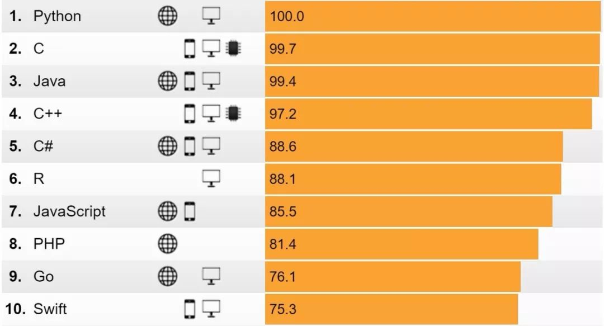
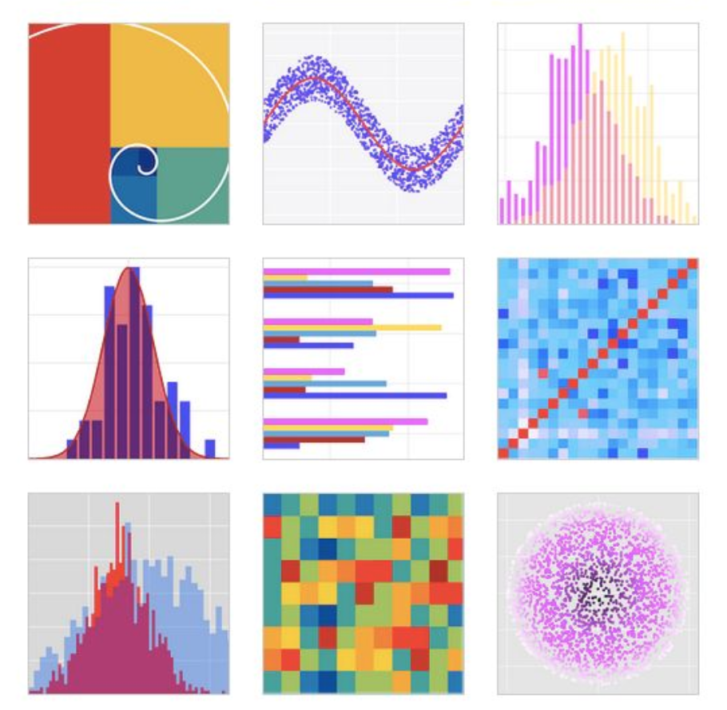

<!DOCTYPE html><html><head><meta charset="utf-8"><title>为什么Python是入行人工智能的首选语言？ | 技术学派</title><meta name="viewport" content="width=device-width,initial-scale=1,maximum-scale=1"><meta name="keywords" content="IT培训, Python, 大数据, 人工智能, Web前端, PHP, python"><meta name="description" content="其实在所有编程语言里，Python并不算新宠，在1991年就发布了第一个版本，至今已经快30年了。最近几年，随着人工智能概念的火爆，Python也迅速升温，成为了众多AI从业者的首选语言。根据数据平台 Kaggle发布的机器学习及数据科学调查报告，在工具语言使用方面，Python是数据科学家和人工智能从业者使用最多的语言。在IEEE Spectrum发布的最受欢迎编程语言列表中，Python同样也"><meta name="keywords" content="python"><meta property="og:type" content="article"><meta property="og:title" content="为什么Python是入行人工智能的首选语言？"><meta property="og:url" content="http://www.JiShuXuePai.com/blog/学习答疑/学习答疑/为什么Python是入行人工智能的首选语言？/index.html"><meta property="og:site_name" content="技术学派"><meta property="og:description" content="其实在所有编程语言里，Python并不算新宠，在1991年就发布了第一个版本，至今已经快30年了。最近几年，随着人工智能概念的火爆，Python也迅速升温，成为了众多AI从业者的首选语言。根据数据平台 Kaggle发布的机器学习及数据科学调查报告，在工具语言使用方面，Python是数据科学家和人工智能从业者使用最多的语言。在IEEE Spectrum发布的最受欢迎编程语言列表中，Python同样也"><meta property="og:locale" content="zh-CN"><meta property="og:image" content="http://www.jishuxuepai.com/blog/学习答疑/学习答疑/为什么Python是入行人工智能的首选语言？/paihang.jpg"><meta property="og:updated_time" content="2018-05-18T02:07:23.000Z"><meta name="twitter:card" content="summary"><meta name="twitter:title" content="为什么Python是入行人工智能的首选语言？"><meta name="twitter:description" content="其实在所有编程语言里，Python并不算新宠，在1991年就发布了第一个版本，至今已经快30年了。最近几年，随着人工智能概念的火爆，Python也迅速升温，成为了众多AI从业者的首选语言。根据数据平台 Kaggle发布的机器学习及数据科学调查报告，在工具语言使用方面，Python是数据科学家和人工智能从业者使用最多的语言。在IEEE Spectrum发布的最受欢迎编程语言列表中，Python同样也"><meta name="twitter:image" content="http://www.jishuxuepai.com/blog/学习答疑/学习答疑/为什么Python是入行人工智能的首选语言？/paihang.jpg"><link rel="stylesheet" href="/libs/bootstrap/bootstrap-grid.css"><link rel="stylesheet" href="/libs/font-awesome/css/font-awesome.min.css"><link rel="stylesheet" href="/libs/titillium-web/styles.css"><link rel="stylesheet" href="/libs/source-code-pro/styles.css"><link rel="stylesheet" href="/css/style.css"><script src="/libs/jquery/jquery.min.js"></script><link rel="stylesheet" href="/libs/lightgallery/css/lightgallery.min.css"><link rel="stylesheet" href="/libs/justified-gallery/justifiedGallery.min.css"><script>var _hmt=_hmt||[];!function(){var e=document.createElement("script");e.src="//hm.baidu.com/hm.js?4c1bd812de3c30edbaa2b803c66f0a04";var t=document.getElementsByTagName("script")[0];t.parentNode.insertBefore(e,t)}()</script></head></html><body><div id="wrap"><header id="header"><div id="header-outer" class="outer"><div class="container"><div class="container-inner"><div id="header-title"><h1 class="logo-wrap"><a href="/" class="logo"></a></h1></div><div id="header-inner" class="nav-container"><a id="main-nav-toggle" class="nav-icon fa fa-bars">菜单</a><div class="nav-container-inner"><ul id="main-nav"><li class="main-nav-list-item"><a class="main-nav-list-link" href="/">主页</a></li><li class="main-nav-list-item"><a class="main-nav-list-link" href="/edu/index.html">学编程</a></li><li class="main-nav-list-item"><a class="main-nav-list-link" href="/blog/">博客</a></li><li class="main-nav-list-item"><a class="main-nav-list-link" href="/tips.html">学习建议</a></li><li class="main-nav-list-item"><a class="main-nav-list-link" href="/about.html">关于</a></li></ul><nav id="sub-nav"><div id="search-form-wrap"><form class="search-form"><input type="text" class="ins-search-input search-form-input" placeholder="搜索"> <button type="submit" class="search-form-submit"></button></form><div class="ins-search"><div class="ins-search-mask"></div><div class="ins-search-container"><div class="ins-input-wrapper"><input type="text" class="ins-search-input" placeholder="想要查找什么..."> <span class="ins-close ins-selectable"><i class="fa fa-times-circle"></i></span></div><div class="ins-section-wrapper"><div class="ins-section-container"></div></div></div></div><script>window.INSIGHT_CONFIG={TRANSLATION:{POSTS:"文章",PAGES:"页面",CATEGORIES:"分类",TAGS:"标签",UNTITLED:"(未命名)"},ROOT_URL:"/",CONTENT_URL:"/content.json"}</script><script src="/js/insight.js"></script></div></nav></div></div></div></div></div></header><div class="container"><div class="main-body container-inner"><div class="main-body-inner"><section id="main"><div class="main-body-header"><h1 class="header"><a class="page-title-link" href="/categories/学习答疑/">学习答疑</a><div class="author">张桐硕</div></h1></div><div class="main-body-content"><article id="post-学习答疑/为什么Python是入行人工智能的首选语言？" class="article article-single article-type-post" itemscope itemprop="blogPost"><div class="article-inner"><header class="article-header"><h1 class="article-title" itemprop="name">为什么Python是入行人工智能的首选语言？</h1></header><div class="article-meta"><div class="article-date"><a href="/blog/学习答疑/学习答疑/为什么Python是入行人工智能的首选语言？/" class="article-date"><time datetime="2018-05-18T01:56:26.741Z" itemprop="datePublished">2018-05-18</time></a></div><div class="article-tag"><i class="fa fa-tag"></i> <a class="tag-link" href="/tags/python/">python</a></div></div><div class="article-entry" itemprop="articleBody"><p>其实在所有编程语言里，Python并不算新宠，在1991年就发布了第一个版本，至今已经快30年了。</p><p>最近几年，随着人工智能概念的火爆，Python也迅速升温，成为了众多AI从业者的首选语言。</p><p>根据数据平台 Kaggle发布的机器学习及数据科学调查报告，在工具语言使用方面，Python是数据科学家和人工智能从业者使用最多的语言。<br></p><p>在IEEE Spectrum发布的最受欢迎编程语言列表中，Python同样也位居榜首。</p><p></p><h2 id="那为什么Python现在变得这么火爆呢？"><a href="#那为什么Python现在变得这么火爆呢？" class="headerlink" title="那为什么Python现在变得这么火爆呢？"></a>那为什么Python现在变得这么火爆呢？</h2><h3 id="1-Python是一种人性化的语言"><a href="#1-Python是一种人性化的语言" class="headerlink" title="1.Python是一种人性化的语言"></a>1.Python是一种人性化的语言</h3><ul><li><p>开发者不需要关注底层</p></li><li><p>语法简单直观</p></li><li><p>表达形式一致</p></li></ul><blockquote><p>我们以”Hello World”为例，来看一下几种语言的代码：</p></blockquote><h4 id="C-语言的代码："><a href="#C-语言的代码：" class="headerlink" title="C 语言的代码："></a>C 语言的代码：</h4><figure class="highlight plain"><figcaption><span>main()</span></figcaption><table><tr><td class="gutter"><pre><span class="line">1</span><br><span class="line">2</span><br><span class="line">3</span><br><span class="line">4</span><br></pre></td><td class="code"><pre><span class="line">&#123; </span><br><span class="line"> printf(&quot;Hello, World!&quot;);</span><br><span class="line"> return 0;</span><br><span class="line">&#125;</span><br></pre></td></tr></table></figure><h4 id="Java的代码："><a href="#Java的代码：" class="headerlink" title="Java的代码："></a>Java的代码：</h4><figure class="highlight plain"><table><tr><td class="gutter"><pre><span class="line">1</span><br><span class="line">2</span><br><span class="line">3</span><br></pre></td><td class="code"><pre><span class="line">public static void main(String[] args)&#123;</span><br><span class="line">System.out.println(&quot;Hello World!&quot;);</span><br><span class="line">&#125;</span><br></pre></td></tr></table></figure><h4 id="Python的代码："><a href="#Python的代码：" class="headerlink" title="Python的代码："></a>Python的代码：</h4><figure class="highlight plain"><table><tr><td class="gutter"><pre><span class="line">1</span><br></pre></td><td class="code"><pre><span class="line">print(&quot;Hello World!&quot;)</span><br></pre></td></tr></table></figure><p>当然，仅仅是一个”Hello World”的话，C和Java的代码也多不了几行。可是不要忘了，C和Java的代码要运行，都必须先经过编译的环节。</p><p>而Python则不用编译，直接运行。而且都可以不用写文件，一条条语句可以直接作为命令行运行。</p><h3 id="2-强大的AI支持库"><a href="#2-强大的AI支持库" class="headerlink" title="2.强大的AI支持库"></a>2.强大的AI支持库</h3><p><strong>矩阵运算</strong></p><p>NumPy由数据科学家Travis Oliphant创作，支持维度数组与矩阵运算。结合Python内置的math和random库，堪称AI数据神器！有了它们，就可以放心大胆玩矩阵了！</p><p><strong>ML模型</strong></p><p>用Python实现大多数经典模型，几十上百行代码就够了。</p><p>当然，对于普通用户，也可以连算法都不用管，只是调用Scikit-Learn的接口就可以了。</p><p><strong>支持图表</strong></p><p>Python还有许多图表方面的支持库。用来生成各种图形表格，是非常简单的事情。</p><p></p><p>现在，人工智能技术在现代社会中的地位日趋重要，尤其在自动化和数据驱动的诸多领域，如图像识别、机器人学、搜索引擎、自动驾驶技术都有不俗的表现。Python语言借助AI和数据科学，攀爬到了编程语言生态链的顶级位置，可以说Python与AI已经紧密捆绑在了一起。</p><p>Python易于阅读和编写，所以经常被称为实用主义，就算是非程序员或开发人员也很容易上手。除此之外，Python还能够满足各种开发需求，为程序员提供了各种选择，如果你习惯了使用python，很容易从一个行业跳到另外一个行业。</p></div><footer class="article-footer"><a data-url="http://www.JiShuXuePai.com/blog/学习答疑/学习答疑/为什么Python是入行人工智能的首选语言？/" data-id="cjhr4tw33002rzifyh1c6fsdc" class="article-share-link"><i class="fa fa-share"></i>分享到</a><script>!function(n){n("body").on("click",function(){n(".article-share-box.on").removeClass("on")}).on("click",".article-share-link",function(t){t.stopPropagation();var e,a=n(this),o=a.attr("data-url"),r=encodeURIComponent(o),i="article-share-box-"+a.attr("data-id"),s=a.offset();if(n("#"+i).length){if((e=n("#"+i)).hasClass("on"))return void e.removeClass("on")}else{var l=['<div id="'+i+'" class="article-share-box">','<input class="article-share-input" value="'+o+'">','<div class="article-share-links">','<a href="https://twitter.com/intent/tweet?url='+r+'" class="article-share-twitter" target="_blank" title="Twitter"></a>','<a href="https://www.facebook.com/sharer.php?u='+r+'" class="article-share-facebook" target="_blank" title="Facebook"></a>','<a href="http://pinterest.com/pin/create/button/?url='+r+'" class="article-share-pinterest" target="_blank" title="Pinterest"></a>','<a href="https://plus.google.com/share?url='+r+'" class="article-share-google" target="_blank" title="Google+"></a>',"</div>","</div>"].join("");e=n(l),n("body").append(e)}n(".article-share-box.on").hide(),e.css({top:s.top+25,left:s.left}).addClass("on")}).on("click",".article-share-box",function(t){t.stopPropagation()}).on("click",".article-share-box-input",function(){n(this).select()}).on("click",".article-share-box-link",function(t){t.preventDefault(),t.stopPropagation(),window.open(this.href,"article-share-box-window-"+Date.now(),"width=500,height=450")})}(jQuery)</script></footer></div></article><section id="comments"><div id="gitalk_frame"></div></section></div></section><aside id="sidebar"><a class="sidebar-toggle" title="Expand Sidebar"><i class="toggle icon"></i></a><div class="sidebar-top"><p>关注我 :</p><ul class="social-links"><li><a class="social-tooltip" title="火星时代" href="http://edu.hxsd.com/edunew/topics/webfull/index.html" target="_blank"><i class="icon fa fa-dribbble"></i></a></li><li><a class="social-tooltip" title="weibo" href="#" target="_blank"><i class="icon fa fa-weibo"></i></a></li><li><a class="social-tooltip" title="rss" href="/atom.xml" target="_blank"><i class="icon fa fa-rss"></i></a></li></ul></div><nav id="article-nav"><a href="/blog/插件资源库/插件资源库/十个最受欢迎的机器学习Python库，你知道几个？/" id="article-nav-newer" class="article-nav-link-wrap"><strong class="article-nav-caption">下一篇</strong><p class="article-nav-title">十个最受欢迎的机器学习Python库，你知道几个？</p><i class="icon fa fa-chevron-right" id="icon-chevron-right"></i> </a><a href="/blog/学习答疑/学习答疑/2018 最具就业前景的编程语言，转行者了解一下/" id="article-nav-older" class="article-nav-link-wrap"><strong class="article-nav-caption">上一篇</strong><p class="article-nav-title">2018 最具就业前景的编程语言，转行者了解一下</p><i class="icon fa fa-chevron-left" id="icon-chevron-left"></i></a></nav><div class="widgets-container"><div class="widget-wrap widget-list"><h3 class="widget-title">分类</h3><div class="widget"><ul class="category-list"><li class="category-list-item"><a class="category-list-link" href="/categories/animate/">animate</a><span class="category-list-count">17</span></li><li class="category-list-item"><a class="category-list-link" href="/categories/git/">git</a><span class="category-list-count">1</span></li><li class="category-list-item"><a class="category-list-link" href="/categories/html/">html</a><span class="category-list-count">2</span></li><li class="category-list-item"><a class="category-list-link" href="/categories/js/">js</a><span class="category-list-count">5</span></li><li class="category-list-item"><a class="category-list-link" href="/categories/php/">php</a><span class="category-list-count">3</span></li><li class="category-list-item"><a class="category-list-link" href="/categories/vue/">vue</a><span class="category-list-count">1</span></li><li class="category-list-item"><a class="category-list-link" href="/categories/学习答疑/">学习答疑</a><span class="category-list-count">18</span></li><li class="category-list-item"><a class="category-list-link" href="/categories/插件资源库/">插件资源库</a><span class="category-list-count">4</span></li></ul></div></div><link rel="stylesheet" href="/css/tech/toc.css"><div class="widget-wrap widget-list widget-toc"><h3 class="widget-title">目录</h3><div class="widget"><div class="toc"></div><link rel="stylesheet" href="https://cdnjs.cloudflare.com/ajax/libs/tocbot/3.0.5/tocbot.css"><script src="https://cdnjs.cloudflare.com/ajax/libs/tocbot/3.0.5/tocbot.min.js"></script><script>$(function(){$(".main-body-content").find("h1,h2,h3").each(function(t){$(this).attr("id")||$(this).attr("id","list"+t)}),tocbot.init({tocSelector:".toc",contentSelector:".main-body-content",headingSelector:"h1, h2, h3",collapseDepth:2,positionFixedSelector:".widget-toc",fixedSidebarOffset:595,includeHtml:!1})})</script></div></div><div class="widget-wrap widget-list"><h3 class="widget-title">标签</h3><div class="widget"><ul class="tag-list"><li class="tag-list-item"><a class="tag-list-link" href="/tags/C/">C</a><span class="tag-list-count">1</span></li><li class="tag-list-item"><a class="tag-list-link" href="/tags/python/">python</a><span class="tag-list-count">6</span></li><li class="tag-list-item"><a class="tag-list-link" href="/tags/web前端/">web前端</a><span class="tag-list-count">2</span></li></ul></div></div><div class="widget-wrap widget-float"><h3 class="widget-title">标签云</h3><div class="widget tagcloud"><a href="/tags/C/" style="font-size:10px">C</a> <a href="/tags/python/" style="font-size:20px">python</a> <a href="/tags/web前端/" style="font-size:15px">web前端</a></div></div><div class="widget-wrap widget-list"><h3 class="widget-title">链接</h3><div class="widget"><ul><li><a href="http://edu.hxsd.com/edunew/topics/webfull/index.html">火星时代</a></li></ul></div></div></div></aside><script>$(function(){$(window).scroll(function(){240<=$(document).scrollTop()?($("#sidebar .sidebar-toggle").addClass("fix"),"block"==$("#sidebar .sidebar-toggle").css("display")&&$(".is-position-fixed").css("top","35px")):$("#sidebar .sidebar-toggle").removeClass("fix")})})</script></div></div></div><footer id="footer"><div class="top"><div class="inner"><div class="list"><div class="left clearfix"><dl><dt>关于我们</dt><dd><a href="/about.html" target="_blank">公司简介</a></dd><dd><a href="edu/index.html" target="_blank">联系我们</a></dd></dl><dl><dt>校区攻略</dt><dd><a href="edu/index.html" target="_blank">校区环境</a></dd><dd><a href="edu/index.html" target="_blank">住宿攻略</a></dd><dd><a href="edu/index.html" target="_blank">来校路线</a></dd></dl><dl><dt>课程培训</dt><dd><a href="edu/python.html" target="_blank">Python</a></dd><dd><a href="edu/python.html" target="_blank">Web前端</a></dd><dd><a href="edu/python.html" target="_blank">PHP</a></dd><dd><a href="edu/python.html" target="_blank">人工智能</a></dd><dd><a href="edu/python.html" target="_blank">大数据</a></dd></dl><dl><dt>常见问答</dt><dd><a href="edu/index.html" target="_blank">学费学时</a></dd><dd><a href="edu/index.html" target="_blank">学习方法</a></dd></dl></div></div><div class="tel"><tel>176-0025-8815</tel><span>北京市海淀区杏石口路81号火星时代大厦</span></div><div class="weixin"><div class="w1"> <span>头条号</span></div><div class="w1"> <span>官方微信</span></div></div></div></div><div class="bot">Copyright 2018 技术学派 京ICP备15015508号-3</div></footer><link rel="stylesheet" href="https://unpkg.com/gitalk/dist/gitalk.css"><script src="https://unpkg.com/gitalk/dist/gitalk.min.js"></script><script>var gitalk=new Gitalk({clientID:"2fbbb9980b49019d99a7",clientSecret:"152dd10e83ef6595761ea2185304f9ac8263573f",repo:"jsxp",owner:"li-kang",admin:["li-kang"]});gitalk.render("gitalk_frame")</script><script src="/libs/lightgallery/js/lightgallery.min.js"></script><script src="/libs/lightgallery/js/lg-thumbnail.min.js"></script><script src="/libs/lightgallery/js/lg-pager.min.js"></script><script src="/libs/lightgallery/js/lg-autoplay.min.js"></script><script src="/libs/lightgallery/js/lg-fullscreen.min.js"></script><script src="/libs/lightgallery/js/lg-zoom.min.js"></script><script src="/libs/lightgallery/js/lg-hash.min.js"></script><script src="/libs/lightgallery/js/lg-share.min.js"></script><script src="/libs/lightgallery/js/lg-video.min.js"></script><script src="/libs/justified-gallery/jquery.justifiedGallery.min.js"></script><script src="/js/main.js"></script></div></body>